Meshing and export#
OpenVCAD designs are implicit: a tree of signed distance fields with attributes. Most slicers,
simulation tools and CAD programs want triangle meshes instead. This guide covers turning a design
into a SurfaceMesh, choosing a voxel size, writing STL and 3MF files, and the mesh operations
that make large exports practical: adaptive meshing, decimation, remeshing, island cleanup,
clipping, hole filling, and automatic surface selection.
It assumes you have worked through Getting Started. The complete method
reference is in the Python API under SurfaceMesh and
MeshSelection, and Selecting triangle-mesh patches covers the selection
tools that the last sections build on.
Every processing method returns a new mesh and leaves the original untouched, so you can compare variants side by side. All lengths are in millimetres.
From a design to a file#
pv.SurfaceMesh(root, voxel_size) samples the tree on a voxel grid and extracts the zero level as
triangles. The voxel size sets the detail: features thinner than about two voxels may close up or
break apart, so pick a voxel size of a third to a half of your thinnest wall or strut.
import pyvcad as pv
mesh = pv.SurfaceMesh(root, 0.3)
print(mesh.triangle_count, mesh.is_closed())
mesh.write_stl("part.stl")
mesh.write_3mf("part.3mf")
Halving the voxel size roughly quadruples the triangle count and the file size, and the meshing
time grows a little faster than that. As a reference, a 25 mm thick conformal gyroid liner on a dome about 200 x 160 mm across
(benchmarked with
benchmarks/python/liner_shell_export.py
on an 8-core desktop) gives:
Voxel size |
|
Triangles |
STL size |
Meshing time |
Peak memory |
|---|---|---|---|---|---|
0.40 mm |
0 |
14.5 million |
726 MB |
~52 s |
~0.9 GB |
0.25 mm |
0 |
37.3 million |
1.9 GB |
~3.5 min |
~2.3 GB |
0.40 mm |
0.05 |
8.5 million |
423 MB |
~53 s |
~0.7 GB |
0.25 mm |
0.05 |
9.5 million |
475 MB |
~3 min |
~1.4 GB |
Almost all of the time is spent evaluating the design tree; extracting triangles and writing the STL take a few seconds. A 3MF file stores shared vertices and is compressed, so it is usually a third of the STL size or less.
A mesh can also be inspected before you export it:
Method |
Answers |
|---|---|
|
Is every edge shared by exactly two triangles (watertight)? |
|
No edge with more than two triangles, no pinched vertices? |
|
How many open edge loops (holes, patch borders)? |
|
Enclosed volume (mm³) and surface area (mm²) |
|
The separate pieces, largest first |
Adaptive meshing#
Uniform meshing spends the same triangle budget everywhere, including on flat faces and gently
curved walls that need only a few large triangles. The adaptivity argument merges voxels whose
surface normals agree while keeping sharp detail at full resolution. The surface stays closed.
The complete example is
01_voxel_size_and_adaptivity.py:
import pyvcad as pv
import pyvcad_metamaterials as mm
cell_map = mm.spherical_cell_map(pv.Vec3(0, 0, 0), 48.0, 60.0, (10.0, 80.0), cells=(24, 6, 2))
lattice = mm.gyroid(cell_map, wall_thickness=0.8)
root = pv.Union(lattice, mm.rim(cell_map, width=1.5))
uniform = pv.SurfaceMesh(root, 0.4)
adaptive = pv.SurfaceMesh(root, 0.4, adaptivity=0.05)
adaptive.write_stl("lattice_dome.stl")

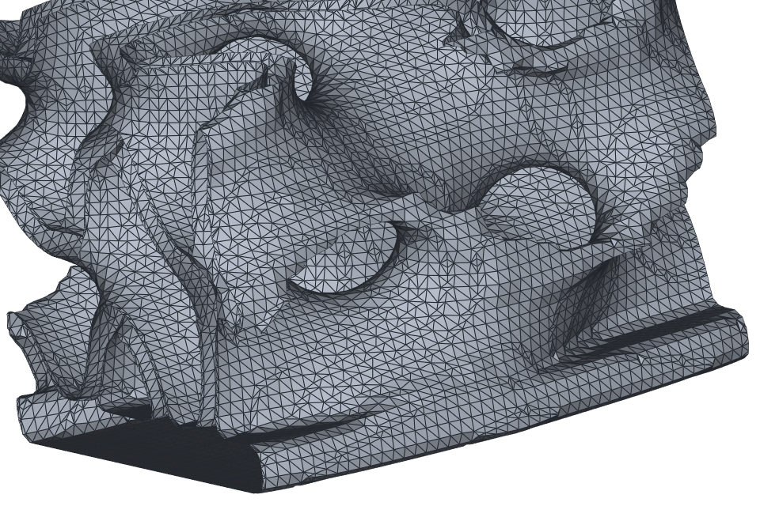

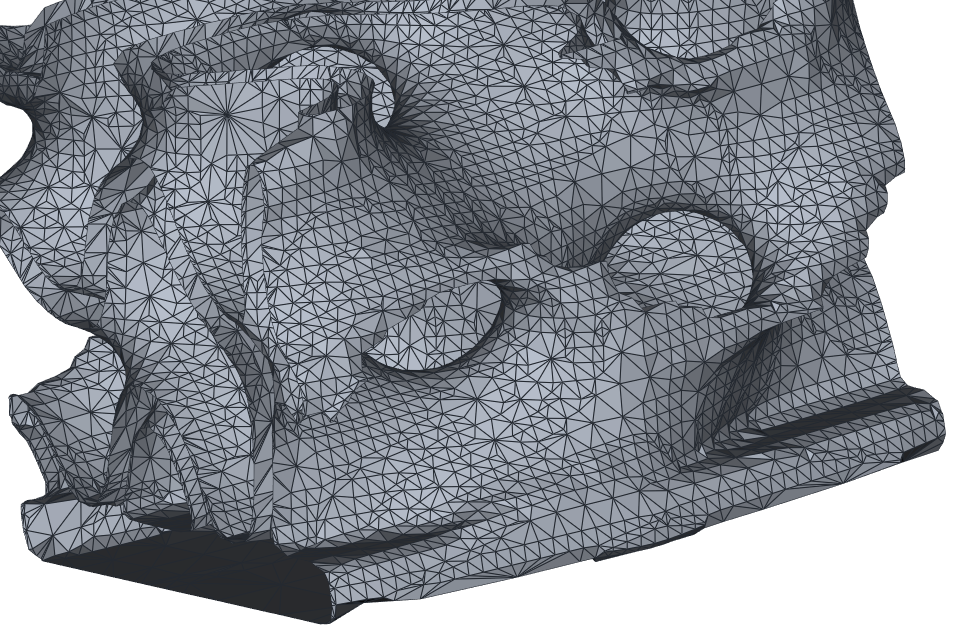
adaptivity is a threshold on how much the normals inside a merged region may differ: regions
merge when 1 - cos(angle) stays below it, within blocks of 8 x 8 x 8 voxels. Useful values are
small:
|
Largest normal angle merged |
Typical use |
|---|---|---|
0 (default) |
none |
Uniform triangles, identical to earlier releases |
0.01 |
~8° |
Curved lattices where every wall must stay true |
0.05 |
~18° |
Most lattice exports |
0.1 or more |
26° and up |
Mostly flat parts; curved surfaces start to facet |
On the liner above at 0.4 mm voxels, adaptivity=0.02 removes 29% of the triangles and 0.05
removes 42%, while the enclosed volume changes by less than 0.2%. At 0.25 mm the same 0.05
removes 75%, because finer voxels give more nearly parallel normals to merge. That makes a fine
voxel size with adaptivity a good way to get both detail and a manageable file. Thin, tightly
curved walls merge less (the dome example drops 18% at 0.05), and flat faces merge at any
setting, so boxy parts shrink dramatically.
Decimation and remeshing#
Decimation removes triangles where they matter least. decimated() collapses edges in order of
the error they introduce (Garland-Heckbert quadrics), so curved regions keep more triangles than
flat ones. Give a target size, an error bound, or both:
light = dense.decimated(target_ratio=0.1) # keep about 10% of the triangles
light = dense.decimated(target_count=200_000)
light = dense.decimated(target_ratio=0.1, max_error=0.02) # stop early rather than move > 0.02 mm
Remeshing does the opposite job: it redistributes vertices so all triangles have about the same size and shape. That suits flattening a surface for a conformal map, simulation pre-processing, and smooth shading.
even = dense.remeshed(1.0, iterations=3) # ~1 mm edges
even_box = box_mesh.remeshed(1.0, feature_angle=45.0) # keep edges sharper than 45° crisp
The complete example is
02_decimate_and_remesh.py.

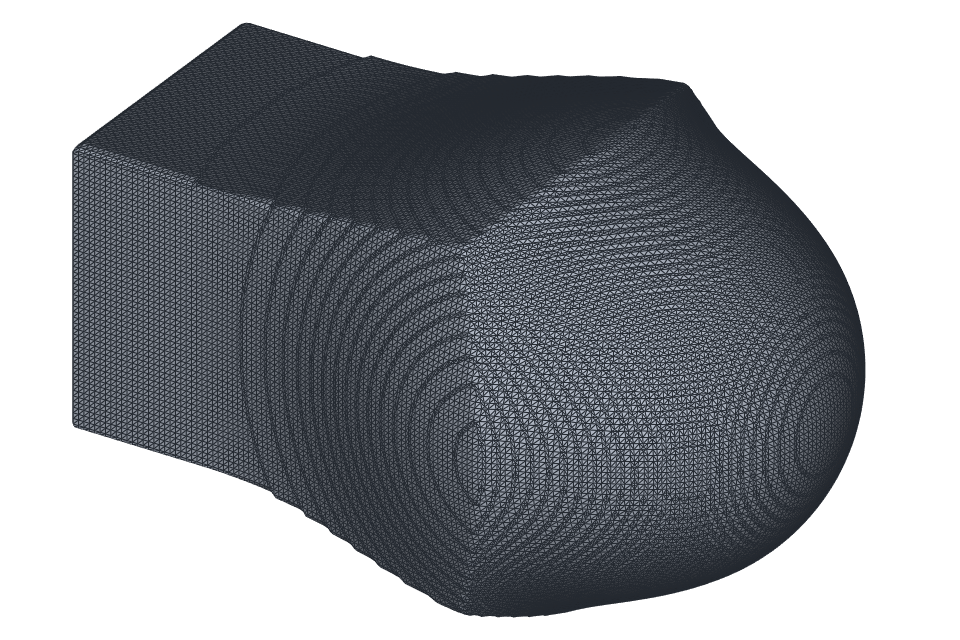

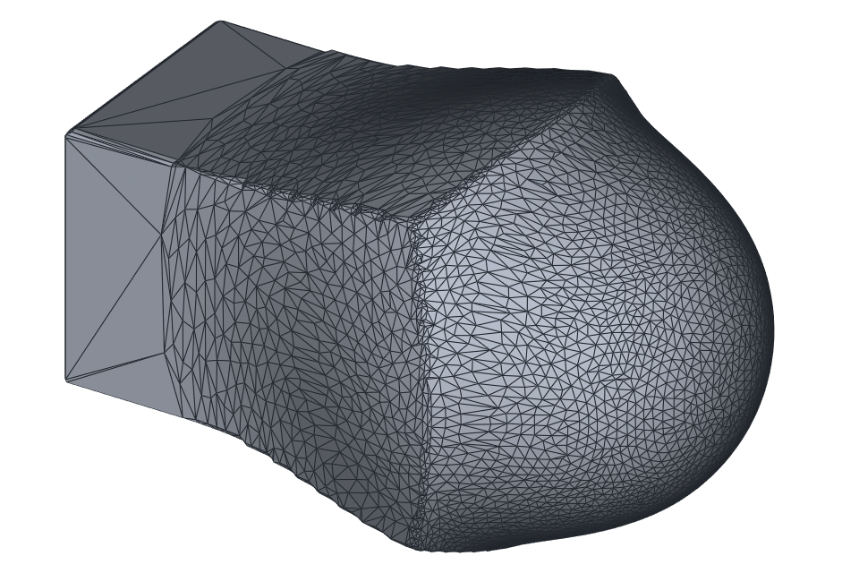

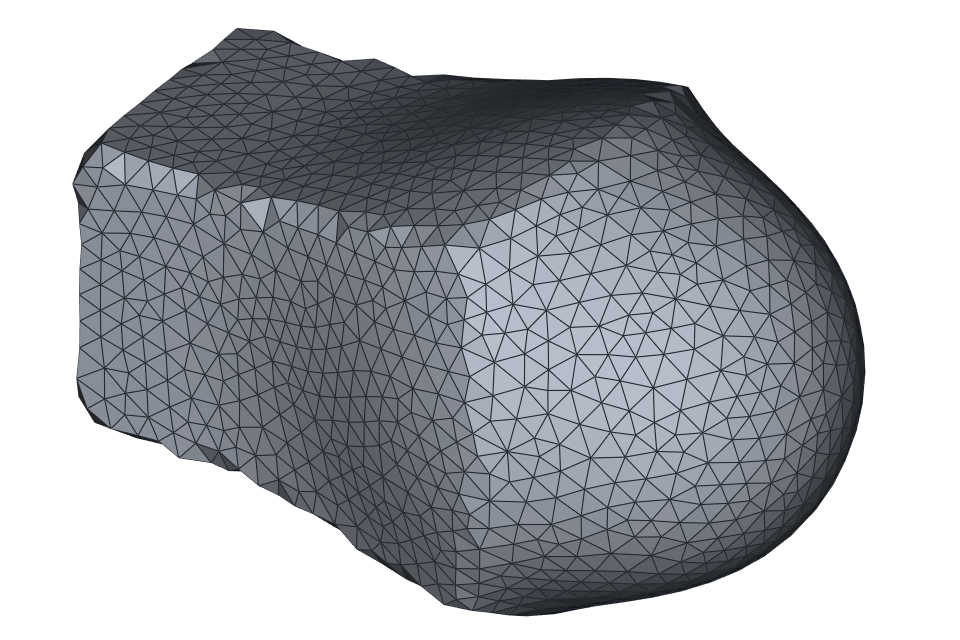
Both run on one CPU core and cost roughly 10 to 20 seconds per million input triangles, and they
need about half a kilobyte of working memory per input triangle. For very large lattice exports,
reach for adaptivity first and decimate the smaller result if you need to go further.
Removing islands#
Small pieces that are not connected to the part appear wherever a feature gets thinner than the
voxel size can resolve, for example where a graded wall tapers off, or where a boundary grazes a
strut. They float free in a print and upset slicers. connected_components() lists the pieces and
remove_small_components() drops the small ones.
pieces = mesh.connected_components() # largest first
clean = mesh.remove_small_components(min_volume=1.0) # mm³
main_only = mesh.remove_small_components(keep_largest=True)
few_triangles = mesh.remove_small_components(min_triangles=100)
Pieces are grouped into bodies before they are judged: the inner wall of a hollow part stays with
the outer wall that encloses it, so a hollow sphere counts as one body with its material volume
and never loses its cavity. The complete example is
03_remove_islands.py.

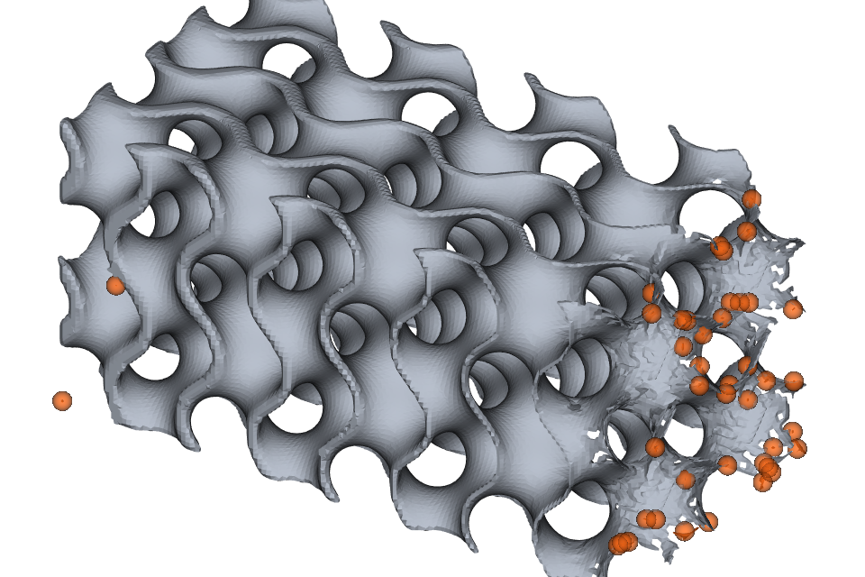

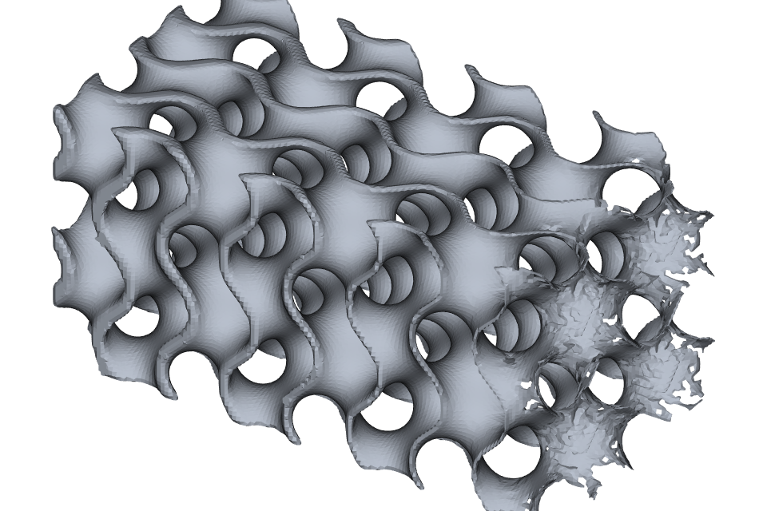
Clipping with any node#
clipped(node, keep="inside") keeps the part of a mesh where a node’s signed distance is negative
(or positive, with keep="outside"). Triangles that cross the boundary are split exactly at the
crossing rather than dropped, so the cut edge is clean. Because the cutter is an ordinary node, a
plane, a primitive, a boolean, or a Function expression all work. This is handy for cropping
scans, such as removing everything below a reference plane or cutting a shaped opening.
big = 200.0
low, high = pv.Vec3(-big, -big, -big), pv.Vec3(big, big, big)
plane = pv.Function("-(z + 15)", low, high) # inside above z = -15
cropped = scan.clipped(plane, keep="inside")
notch = pv.Function("sqrt(y*y + (z - 5)^2) - 9", low, high) # a cylinder along x
cut = cropped.clipped(notch, keep="outside")
print(cut.boundary_loop_count()) # 3 openings
A Function node is only defined inside its bounding box, so make the box cover the mesh. The
node is prepared by clipped(); pass voxel_size if the node needs a specific resolution.
Filling holes#
filled_holes() closes open boundary loops. Each hole is triangulated, refined to match the
surrounding triangle size, and (by default) faired so the patch blends smoothly with the
surrounding surface. Use max_hole_size (the bounding-box diagonal of a hole’s boundary, in mm) to
fill only small holes, and fair=False to keep a patch flat, for example across a planar cut.
patched = cut.filled_holes(max_hole_size=40.0) # close the round side openings smoothly
closed = patched.filled_holes(fair=False) # cap the flat crop
print(closed.boundary_loop_count(), closed.is_closed()) # 0 True
The complete example is
04_clip_and_fill_holes.py.

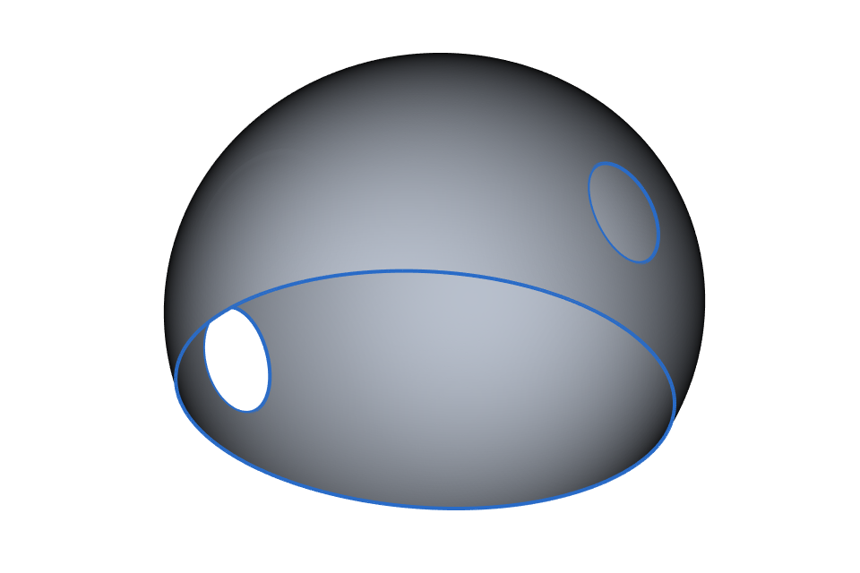

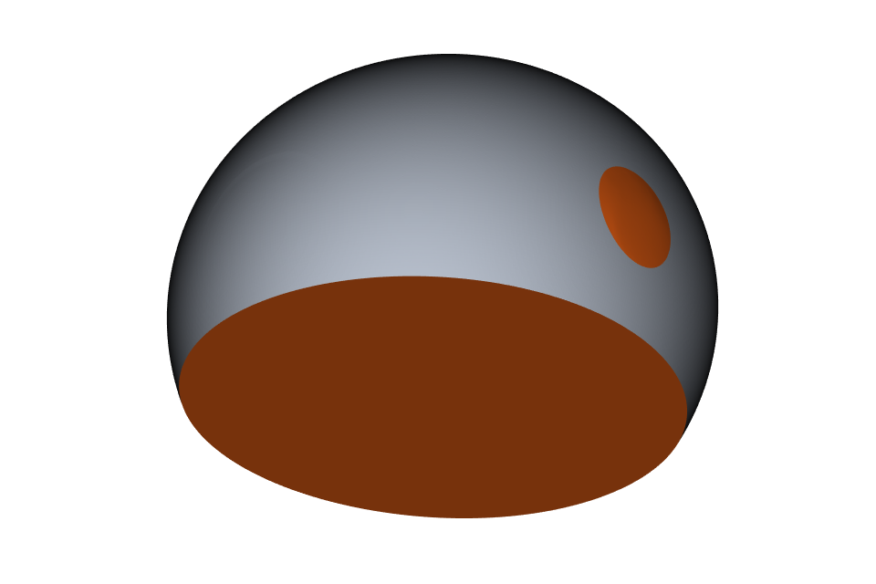
Selecting the surface you can see#
Shells exported from CAD often have many small faces, fillets and openings, which makes the
angle-based selections in Selecting triangle-mesh patches leak across
rounded edges. select_visible_from() takes a different approach: a triangle is selected when a
straight line from one of the seed points reaches it before any other triangle. Seen from inside a
shell, that is exactly the inner surface, across creases and around vents, and never the outer
skin.
inner = shell_mesh.select_visible_from([(0, 0, 15), (10, 0, 20)], facing="toward")
head_region = pv.Sphere(pv.Vec3(0, 0, 25), 18.0)
inner = shell_mesh.select_visible_from(head_region, seed_count=8, facing="toward")
Seeds can be points or a node; with a node, seed_count evenly spread points inside it are used
(pv.SurfaceMesh.seed_points_inside() returns them if you want to see them). facing="toward"
keeps only triangles whose normal points at a seed, and max_view_angle drops triangles seen very
obliquely. The result is an ordinary MeshSelection, so grown(), shrunk(), set operations,
mesh() and the interactive picker all apply. The complete example is
05_visible_inner_surface.py.

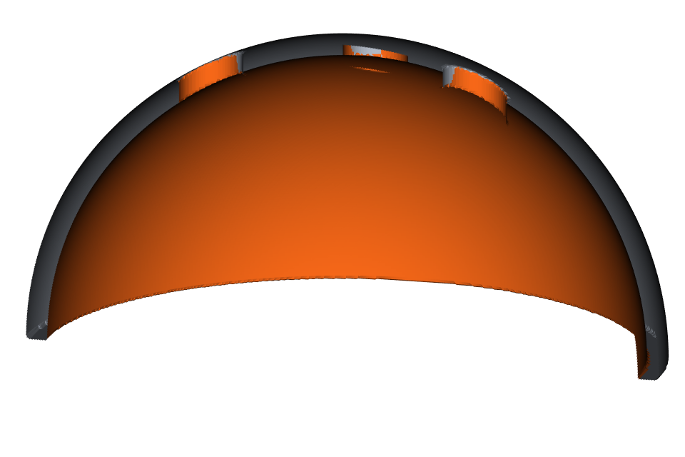
Exact meshes from CAD#
A CADModel can be tessellated directly, without voxels. to_surface_mesh() triangulates every
face within a distance tolerance, welds shared edges so solids come out closed, and records the
CAD face each triangle came from in triangle_labels:
model = pv.CADModel.from_step("bracket.step")
mesh = model.to_surface_mesh(deflection=0.05, angular_deflection=15.0)
face_of_triangle = mesh.triangle_labels # model.faces index per triangle
Labels travel with the mesh through clipped(), remeshed() (face borders stay in place),
decimated() (face borders are never collapsed), component extraction and MeshSelection.mesh().
They also work as region boundaries for select_linked_constrained(triangle_regions=...), and
they let you map a visibility selection back to whole CAD faces:
faces_seen = sorted({mesh.triangle_labels[i] for i in inner.triangle_ids})
The complete example is
06_cad_face_tessellation.py.

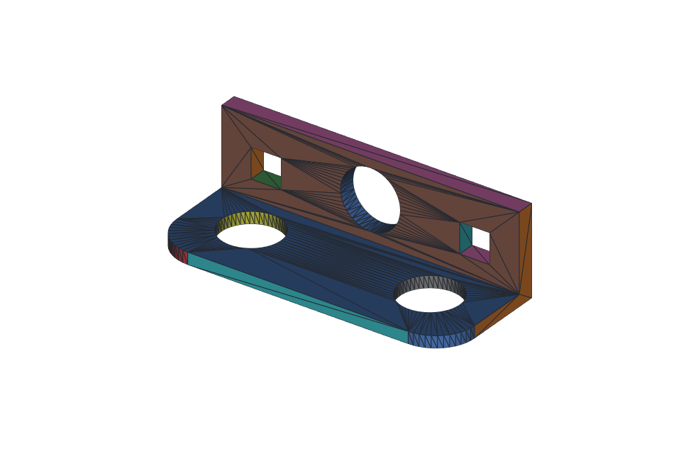
A practical export recipe#
For large lattice parts:
Choose the voxel size from the thinnest feature (a third to a half of it).
Mesh with a small
adaptivity(0.02 to 0.05).Remove islands with
remove_small_components(min_volume=...)and checkis_closed().Decimate only if the file must be smaller still.
Write 3MF when the downstream tool accepts it, STL otherwise.